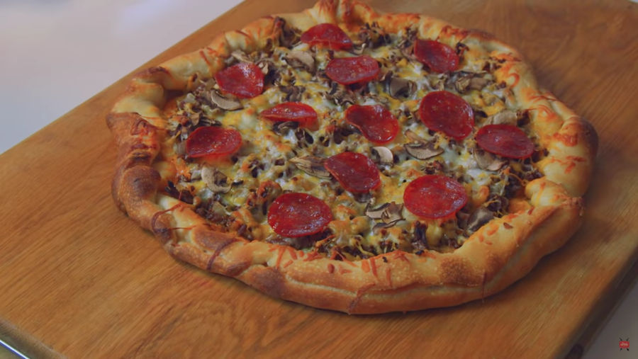

Krabby Patty
The Krusty Krab Pizza resembles any regular cheese pizza. It has eight slices and features seven pepperoni and mushrooms. It comes in a white cardboard box with a horizontal line on the cover that reads "Pizza" in red text.
Ingredients
Crust:
- 1 ¼ cups warm water (105-115 degrees F)
- 2 ¼ teaspoons yeast
- 3 teaspoons sugar
- 3 tablespoons instant non-fat dry milk powder
- 1 ½ teaspoons salt
- 1 ½ tablespoons olive oil
- 3 cups bread flour
Sauce:
- ¼ cup, plus 2 tablespoons ketchup
- 1 ½ tablespoons mustard
- 1 ½ tablespoons mayonnaise
- 1 teaspoon sugar
Toppings:
- ½ pound ground beef
- ½ cup chopped onions
- 1 tablespoon olive oil
- Shredded Mozzarella
- Shredded Cheddar Cheese
- Dill Pickles
- Mushrooms
- Pepperoni
Steps
Crust:
In a small bowl, dissolve yeast and sugar in the warm water. Let rest for 5 minutes or until foamy. Combine flour, dry milk powder, and salt in a large bowl. Add olive oil and yeast mixture to flour. Stir to combine and form into a ball with your hands. Turn the dough out onto a lightly floured surface and knead for 10 minutes. Form the dough into a ball again and place in a large bowl. Lightly coat dough with oil and cover bowl with plastic wrap. Let the dough rise in a warm place for 2 hours or until it has doubled in size. Punch down the dough and flatten and stretch it into desired pizza size and shape. Let rest for 15 minutes on a lightly floured pizza paddle or on your pizza pan.
Sauce:
Combine ketchup, mustard, mayonnaise, and sugar in a small bowl.
Ground Beef:
Heat the olive oil in a large skillet over medium-high heat. Add the onions, ground beef, hamburger rub, Worcestershire sauce, and liquid smoke. Cook until the meat has browned. Remove from heat and set aside.
Putting It All Together:
- If you have a pizza stone, place it in the oven. If not, just make your pizza on the pan and place it in the oven once it is heated.
- Preheat oven as high as it can go! Mine was at 550 degrees F.
- Ladle desired amount of sauce onto crust. Layer dill pickles over the sauce. Spread the ground beef over the pickles. Add cheese. Top with mushrooms and pepperoni. Transfer the pizza from paddle to stone or place your pizza pan in the oven. Bake until crust is browned and cooked through. My pizza was in there for 15 minutes, but all ovens vary so you may have to adjust your cooking time.
- Remove the pizza from oven. Slice and enjoy!